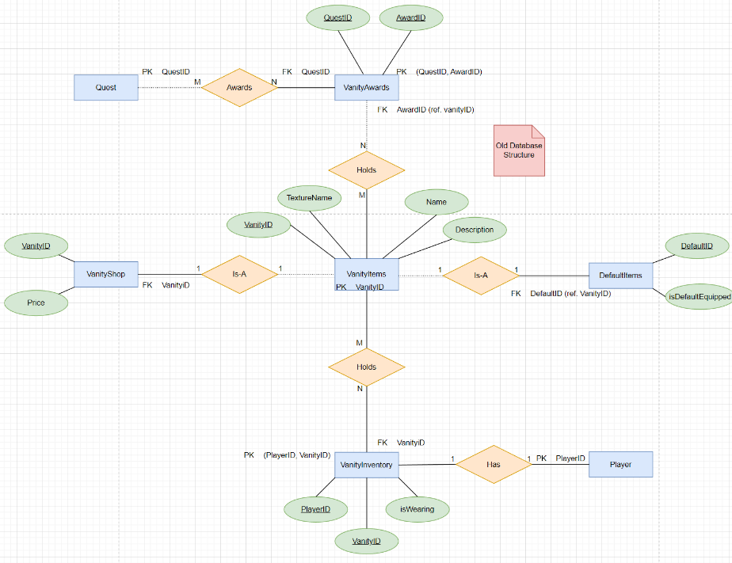
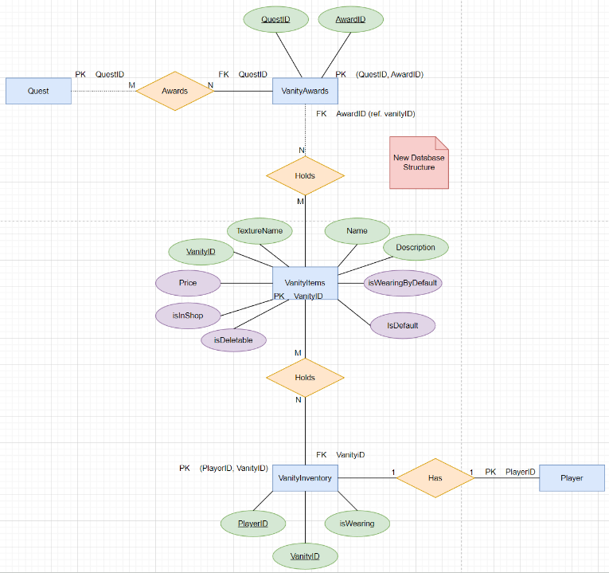

Projects
A list of projects that I have completed including descriptions and pictures
Bet14 Site
I am currently developing a website that will provide the user with a new sports bet each day and you will be have to choose the correct bet 14 days in a row.
I am using PHP and HTML to create the site with the help of an apache web server and MYSQL database to store user data and daily picks/bets.
The bets for each day are recieved from a webscraper made in python to pull a random MLB/NFL bet from draftkings and store it into the MYSQL database for use on the website. Once the user inputs there bet it will be saved to the database along with there daily streak of correct bets picked.
Future ideas: A leaderboard page for other users to see who is on the biggest streak.
Freshman MMO
Led the development of a preexisiting MMO game for university freshman to be able to play in the freshman seminar class at Shippensburg. We were responsible for developing the game functionality and fixing exisiting functionality. Over the course of the semester we developed new sprites for npcs, such as bicycles and costumes. We also developed 3 new maps for the game, extending the map to match more of campus, and new types of quests for players to complete.
We developed a command scheduling system for the main purpose of creating timed quest objectives. The command scheduling system was implemented so that it can be resused and is not just locked to a certain feature. A command can now be sent with the unix timestamp for when the timer expires and the command to be executed when the timer is up. These timers will only be persisted to the database when they are assoicated with a player by a playerID.
Another thing we added was quiet servers. The freshman that beta tested the game complained that they could not find there character in the starting room when they first played the game. We thought of the idea to creat a quiet server so that when you are in certain areas the only thing you will be able to see is yourself and npcs.
The final thing we did was refactor the database tables for items in the game. There was five tables that were being used for things that involved vanity items with a lot of duplicate data. We lowered that down to three so that we can remove duplicate data and make sure that there was no data that was being lost or edited incorrectly.
Database before
Database after
Bed Shaker App
Led the development of the backend services used on an app that works with a smart switch to trigger a bed shaker to wake people who are hard of hearing when they recieve a certain text message from specified senders.
We utilized API calls from the smart switch to make HTTP requests to change the network that the switch was connected to and to also toggle the switch. We created four pages on the app the main page, wifi connection page, contacts page, and settings page.